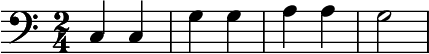
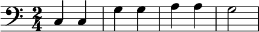

Textový vstup
„Sestavení“ not

(Klepněte kvůli zvětšení)
LilyPond je sestaveným systémem: je spuštěn přes textový soubor, který noty popisuje. Výsledný výstup je prohlížen na obrazovce nebo vytištěn. V určité smyslu je LilyPond spíše programovacím jazykem než obrazovým programem pro sazbu not.
Člověk noty nepíše tak, že obrázky not vytáhne z nakreslené laťky a umístí je do stále se dynamicky obnovující notové osnovy. Místo toho píše text. Tento text je LilyPondem vykládán (nebo „sestaven“) a přitom je vyráběna pěkně vypadající notová sazba.
Lidé zvyklí na obrazné sázení not mohou potřebovat nějakou chvíli na to, aby se naučili novým pracovním způsobům, ale výsledek ztrátu vzniklou při vynaložení dodatečného úsilí vyrovnává.
Pozor: Ukazujeme krátký přehled našeho textového vstupu – není to tak složité, jak to zní. Nedělejte si žádné starosti, když v příkladu všemu neporozumíte. V naší dokumentaci je o všech jednotlivých podrobnostech velice důkladně pojednáno.
Je to jednoduché tak jako A B C
Noty jsou kódovány písmeny a čísly. Zvláštní příkazy jsou zadávány zpětným (obráceným) lomítkem.
 

Předznamenání jsou přidávána pomocí různých koncovek: -is
za notou sází křížek, -es zato béčko (– toto jsou české koncovky,
koncovky v jiných jazycích jsou možné také). LilyPond sám rozhodne o tom, kde
předznamenání umístí.

Popová hudba
Akordy a text písničky mohou být jednoduše dány dohromady na jednom listu.


Orchestrální hlasy
Soubor se vstupem obsahuje noty jednoho díla. Noty a hlasy mohou být vytvořeny z jednoho jediného vstupního souboru. Když je změněna nějaká nota, změna se opět současně nalézá i v hlasu a v notovém zápisu. Tím, že noty jsou využity vícekrát, měly by být přiděleny jedné proměnné:

S touto proměnnou pak lze vytvořit sólový hlas (zde přesunut, pomlky jsou staženy):


Stejná proměnná se potom používá v notovém zápisu (zde v původní tónové výšce):


Dokumentace pro začátečníky
Je nám jasné, že tento způsob psaní not se mnoha uživatelům zdá podivný. Z toho důvodu jsme napsali důkladné poučení, jež má novým uživatelům pomoci. Člověk by měl začít s částí nazvanou úvod. Příručka k učení se chová jako úvod a začátek při práci s LilyPondem; jsou zde zodpovězeny četné otázky, dříve než by si je člověk vůbec mohl položit!
Čtěte, prosím, příručku k učení se, předtím než si budete stěžovat na chyby! Noví uživatelé si někdy myslí, že LilyPond nepracuje správně, zatímco program dělá ve skutečnosti přesně to, k čemu byl napsán.
Další informace se nacházejí pod příručkami
Jednodušší prováděcí prostředí

(Klepněte kvůli zvětšení)
LilyPond se především stará o sázení not v té nejlepší jakosti – programování obrazného uživatelského rozhraní (GUI) by nás od tohoto úkolu jen odvádělo. Přesto jsou jiné projekty, jejichž cílem je vytváření souborů LilyPond.
Některá prováděcí prostředí zahrnují zvýrazňování skladby, automatické doplňování a předvyrobené předlohy. Jiné programy poskytují k použití skutečné obrazné uživatelské rozhraní, s nímž člověk může noty upravovat obrazově. Další informace se nacházejí pod snadnějšími úpravami.
A co teď?
Jste nyní připraveni na stažení LilyPondu? Ještě stále nejste přesvědčeni? Přečtěte si o snadnějších úpravách.
Jiné jazyky: English, català, deutsch, español, français, magyar, italiano, 日本語, nederlands, 中文.
About automatic language selection.